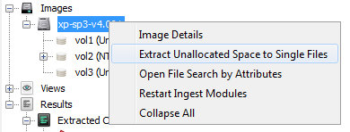

Extracting Unallocated Space
Unallocated space are chunks of the file system that is currently not being used for anything.
Unallocated space can store deleted files and other interesting artifacts. On the actual image,
Unallocated space is stored in blocks with distinct locations on the system. However, because
of the way various carving tools work, it is more ideal to feed them a single, large unallocated
file.
Autopsy provides access to both methods of looking at unallocated space.
- Individual Blocks
Underneath a volume, there is a folder named Unalloc. This folder contains all the individual unallocated blocks as the image is storing them.
You can right click and extract them the same way you can extract any other type of file in the Directory Tree.
- Single Files
There are two ways to extract unallocated space as a single file. Right clicking on a volume and selecting "Extract Unallocated Space as Single File"
will concatenate all the unallocated files into a single, continuous file for the volume.
The second way is to right click on an image, and select "Extract Unallocated Space to Single Files". This option will extract one single file for each
volume in the image.
Progress on extraction is sent to the progress bar in the bottom right. Progress is based on number of files concatenated.
These files are stored in the Export folder under the case directory.
Files are named according to ImageName-Unalloc-ImageObjectID-VolumeID.dat
This naming scheme ensures that no duplicate file names will occur even if an there are two images with the same name in a case.
Below is where to find the single file extraction option
